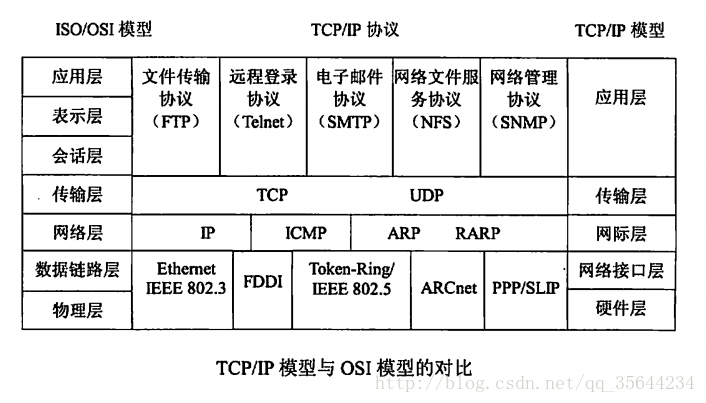
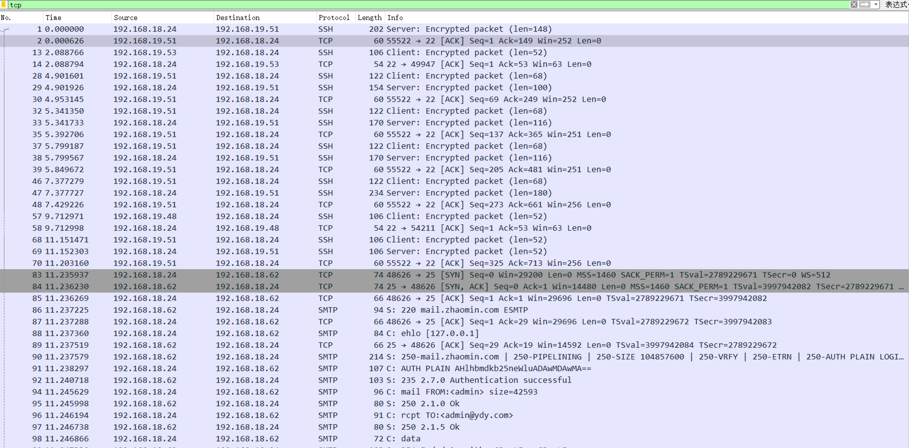
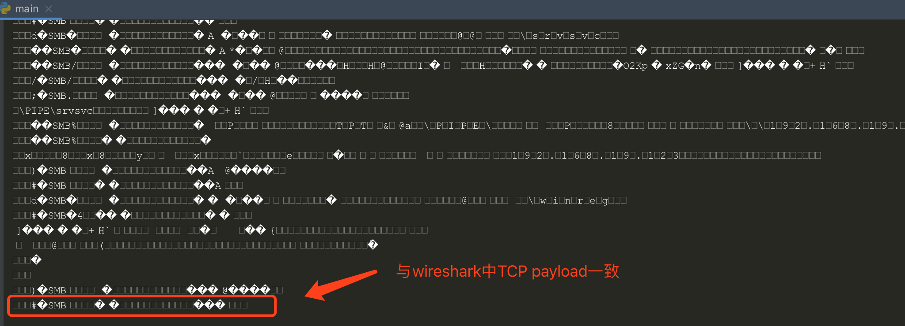
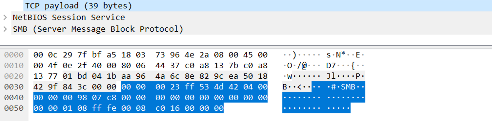

需求：使用Python解析pcap数据包文件，获取基于TCP/IP的应用层协议类型。
使用 dpkt 模块
dpkt安装
dpkt模块的使用方法，可以查看官网dpkt官网。
了解pcap数据包，各层结构，如下图所示：

我们要做的就是通过解析，知道应用层是哪一种协议。
代码实现
pcap样本文件
如下图所示：

里面有很多基于TCP/IP的协议，如SSH、SMTP和SMB等。
读取pcap文件
通过dpkt模块下的Reader()函数读取，并返回文件句柄对象
1
2
3
| def get_pcap_obj(self):
f = open(self.file)
return dpkt.pcap.Reader(f)
|
遍历解析
逐层遍历，直到获取TCP层中应用层的数据（payload）, 并写入一个列表
1
2
3
4
5
6
7
8
9
10
11
12
13
14
15
| def get_tcp_data(self):
pcap = self.get_pcap_obj()
for timestamp, buf in pcap:
eth = dpkt.ethernet.Ethernet(buf)
if not isinstance(eth.data, dpkt.ip.IP):
continue
ip = eth.data
if not isinstance(ip.data, dpkt.tcp.TCP):
continue
tcp = ip.data
self.data_list.append(tcp.data)
return self.data_list
|
完整代码
1
2
3
4
5
6
7
8
9
10
11
12
13
14
15
16
17
18
19
20
21
22
23
24
25
26
27
28
29
30
31
32
33
34
35
36
37
38
|
import dpkt
file = './base_protoall.pcap'
class ParsePcap(object):
def __init__(self, pcap_file):
self.file = pcap_file
self.data_list = []
def get_pcap_obj(self):
f = open(self.file)
return dpkt.pcap.Reader(f)
def get_tcp_data(self):
pcap = self.get_pcap_obj()
for timestamp, buf in pcap:
eth = dpkt.ethernet.Ethernet(buf)
if not isinstance(eth.data, dpkt.ip.IP):
continue
ip = eth.data
if not isinstance(ip.data, dpkt.tcp.TCP):
continue
tcp = ip.data
self.data_list.append(tcp.data)
return self.data_list
if __name__ == '__main__':
parse = ParsePcap(file)
data_list = parse.get_tcp_data()
for tcp in data_list:
print tcp
|
运行结果

与通过wireshark查看的payload数据是相同的。
